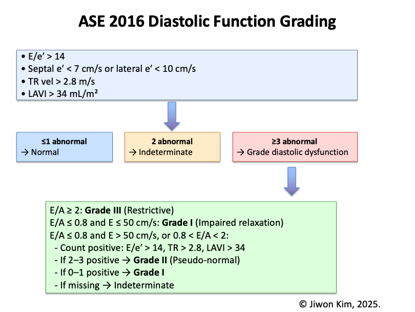

ASE 2016 Diastolic Function Grading Tool
Step 1: Initial Screening (any LVEF)
E/e′:
(Abnormal: > 14)
Septal e′ (cm/s):
(Abnormal: < 7)
Lateral e′ (cm/s):
(Abnormal: < 10)
TR velocity (m/s):
(Abnormal: > 2.8)
LA volume index (ml/m²):
(Abnormal: > 34)
Step 2: Mitral Inflow Grading
(If ≥3 abnormal above)
E/A ratio:
Mitral E velocity (cm/s):
Grade Diastolic Function

ASE 2016 Diastolic Dysfunction Grading Algorithm